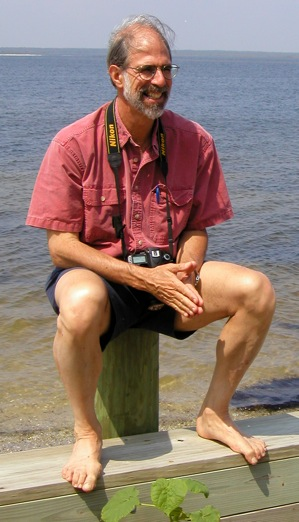

David Eisenbud received his PhD in mathematics in 1970 at the University of Chicago under Saunders MacLane and Chris Robson, and was on the faculty at Brandeis University before coming to Berkeley, where he has been Professor of Mathematics since 1997. He has been a visiting professor at Harvard, Bonn, and Paris. Eisenbud's mathematical interests range over commutative and non-commutative algebra, algebraic geometry, topology, and computer methods.
Eisenbud served as Director of MSRI from 1997 to 2007. He was President of the American Mathematical Society from 2003 to 2005. He is a Director of Math for America, a foundation devoted to improving mathematics teaching. He has been a member of the Board of Mathematical Sciences and their Applications of the National Research Council, and is a member of the US National Committee of the International Mathematical Union, which he will chair, starting in 2010. In 2006 Eisenbud was elected a Fellow of the American Academy of Arts and Sciences. Eisenbud is Chair of the Editorial Board of the Algebra and Number Theory journal, which he helped found in 2006, and serves on the editorial boards of the Bulletin du Société Mathématique de France, Springer-Verlag's book series Algorithms and Computation in Mathematics, and the Journal of Software for Algebraic Geometry.
Eisenbud's interest in computation in the support of commutative algebra and algebraic geometry begin in the early 1970's in the course of his work on free resolutions with David Buchsbaum. An undergraduate named Ray Zibman programmed Brandeis' PDP10 for to compute Gorenstein ideals of codimension 3, and this led to the structure theorem for such ideals. After this success, Eisenbud was a convert to the usefulness of computers in this field, and has been interested in it ever since. His joint work with E. Graham Evans led Evans to suggest the project of computing syzygies to his undergraduate student Mike Stillman...

The source of this document is in Macaulay2Doc/ov_preface.m2:454:0.